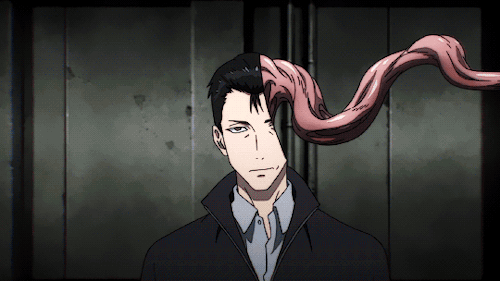

Darling in the Franxx
En un futuro distante, la humanidad ha creado ciudades
fortificadas llamadas Plantaciones, que funcionan como refugio
para las personas, pues el suelo de la Tierra está arruinado.
Dentro de estas ciudades futuristas, niños y niñas son entrenados
para pilotar robots gigantes llamados Franxx, sin saber nada del
mundo exterior.
Demon Slayer
 En la Era Taisho, Tanjiro Kamado es un chico inteligente y con buen olfato cuya misión consiste en proteger a su hermana demonio para que los cazadores de demonios no la maten.
En la Era Taisho, Tanjiro Kamado es un chico inteligente y con buen olfato cuya misión consiste en proteger a su hermana demonio para que los cazadores de demonios no la maten.
Además, también busca al lÃder de los demonios, que fue el responsable de la muerte de su familia. En el camino, va conociendo otras personas mientras prosigue la búsqueda de una cura para su hermana.
Parasite

Un adolescente de 17 años llamado Shinichi Izumi, que vive con sus padres en un barrio tranquilo en Tokio.
Una noche, criaturas similares a gusanos llamados “parásitos†aparecen en la Tierra, haciéndo huésped a los humanos al invadir sus cerebros entrando a través de los oÃdos, la nariz, etc.
Una noche, criaturas similares a gusanos llamados “parásitos†aparecen en la Tierra, haciéndo huésped a los humanos al invadir sus cerebros entrando a través de los oÃdos, la nariz, etc.
One Punch-Man
 En la Era Taisho, Tanjiro Kamado es un chico inteligente y con buen olfato cuya misión consiste en proteger a su hermana demonio para que los cazadores de demonios no la maten.
En la Era Taisho, Tanjiro Kamado es un chico inteligente y con buen olfato cuya misión consiste en proteger a su hermana demonio para que los cazadores de demonios no la maten.
Además, también busca al lÃder de los demonios, que fue el responsable de la muerte de su familia. En el camino, va conociendo otras personas mientras prosigue la búsqueda de una cura para su hermana.